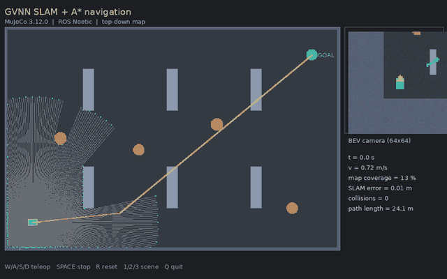
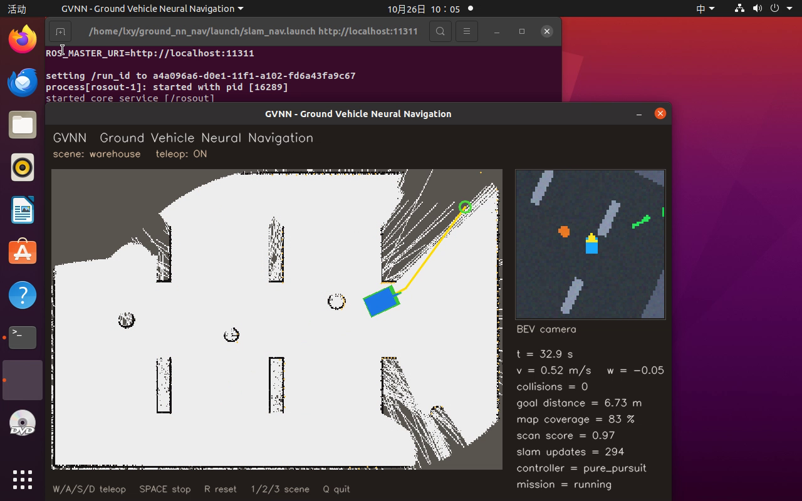

MuJoCo 地面无人车：激光 SLAM、A* 导航与神经感知/控制
基于 ROS Noetic + MuJoCo 3.12.0 的差速驱动地面无人车模块。包含物理仿真、键盘遥控、360° 激光、前向 RGB-D/BEV 相机、在线占据栅格 SLAM、A* 重规划、纯跟踪控制，以及四个纯 NumPy 神经网络：激光去噪、速度/转向控制、局部规划、端到端 BEV 图像驾驶。

与仓库已有模块的区别
| 模块 | 仿真器 | 主要能力 |
|---|---|---|
mujoco_car_avoidance |
MuJoCo | 射线感知 + 规则分级减速 |
mujoco_car_nn_avoidance |
MuJoCo | 射线 + MLP 端到端避障 |
carla_mapping_navigation |
CARLA | 激光建图 + 神经网络规划 |
| 本模块 | MuJoCo | 在线 SLAM + A* + 纯跟踪 + 四个网络 + ROS Noetic 全链 |
本模块不是单一避障演示：它同时验证了“建图 → 重规划 → 跟踪 → 神经感知/控制/端到端”的完整链路，并给出三场景闭环指标与失败分析。
项目结构概览
mujoco_ground_slam_nn_nav/
├── main.py / main.sh 统一入口（--launch / --test / --info）
├── gvnn/
│ ├── sim/ MuJoCo 场景、传感器、Pillow 渲染
│ ├── slam/ 对数几率栅格、增量扫描匹配
│ ├── planning/ A*、神经局部规划
│ ├── control/ 纯跟踪、安全层
│ └── nn/ MLP/CNN/Adam（纯 NumPy）
├── scripts/nodes/ 9 个 ROS 节点
├── launch/ 6 个 launch
├── models/ 4 个训练好的网络
├── tools/ 采集、训练、评估、GIF 录制
├── tests/ 15 个单元测试
├── results/ benchmark 与训练指标
├── package.xml
└── CMakeLists.txt
一、环境准备与核心依赖
| 组件 | 版本 |
|---|---|
| Ubuntu | 20.04.6 LTS（VMware 虚拟机实测） |
| ROS | Noetic（/opt/ros/noetic） |
| Python（计算节点） | 3.11，项目内 .venv |
| MuJoCo | 3.12.0 |
| NumPy / Pillow | 1.26.4 / ≥9 |
| OpenCV | 4.2（系统 Python，仅 Viewer） |
MuJoCo 3.12 要求 Python ≥ 3.10，而 Ubuntu 20.04 的系统 Python 是 3.8。因此
roslaunch/roscore仍用系统 Python 3.8，仿真/SLAM/规划/控制/E2E 节点由脚本自动exec到项目.venv的 Python 3.11。不会修改.bashrc、PATH、系统 Python 包或/opt/ros。
安装：
# 1. 放入 catkin 工作区
mkdir -p ~/catkin_ws/src
cp -r <仓库>/src/ground/mujoco_ground_slam_nn_nav ~/catkin_ws/src/
# 2. 项目内 venv
cd ~/catkin_ws/src/mujoco_ground_slam_nn_nav
bash scripts/setup_env.sh
# 3. 编译
cd ~/catkin_ws
catkin_make
source devel/setup.bash
若系统没有 Python 3.11，可先通过 deadsnakes/pyenv/conda 安装，再执行：
PYTHON311=/path/to/python3.11 bash scripts/setup_env.sh
二、启动流程
每个新终端先执行：
source /opt/ros/noetic/setup.bash
source ~/catkin_ws/devel/setup.bash
【终端 1】键盘遥控（任务 1、2）
roslaunch mujoco_ground_slam_nn_nav teleop.launch scene:=warehouse
- 弹出 OpenCV Viewer：左侧俯视图与激光点，右侧 BEV 相机与 HUD。
- 点击窗口后按
W/A/S/D，SPACE停车，R重置，1/2/3切换场景，Q退出。 - 若窗口不可用，使用终端遥控：
rosrun mujoco_ground_slam_nn_nav teleop_keyboard.py
【终端 2】SLAM + A* 自主导航（任务 3）
roslaunch mujoco_ground_slam_nn_nav slam_nav.launch scene:=warehouse viewer:=true
流程：/scan + /odom → SLAM 发布 /map、/slam_pose → A* 每 0.5 s 重规划 /plan → 控制器发布 /cmd_vel；到达目标后写入 results/ros_classical_warehouse.json。
无窗口：
roslaunch mujoco_ground_slam_nn_nav slam_nav.launch viewer:=false
【终端 3】神经规划 + 神经控制
roslaunch mujoco_ground_slam_nn_nav neural_nav.launch scene:=warehouse
规划器用 21×21 局部栅格 + 目标极坐标预测 8 方向；置信度 <0.50 或路点被挡时回退 A*。控制器用 5 维特征预测速度/角速度，横向/航向误差大时由纯跟踪监督。
【终端 4】端到端 BEV-CNN
roslaunch mujoco_ground_slam_nn_nav e2e.launch scene:=crossing
/camera/bev/image_raw → 2 层 CNN → /cmd_vel，保留安全层与目标先验。
统一入口
python3 main.py --info
python3 main.py --launch slam_nav --scene warehouse
python3 main.py --launch teleop --no-viewer
.venv/bin/python main.py --test
三、实测结果
测试环境：VMware Ubuntu 20.04.6，4 vCPU / 3.8 GB，无 CUDA，MuJoCo 3.12.0，ROS Noetic。
| 指标 | 数值 |
|---|---|
| 全链 SLAM + A*（warehouse，seed=20261026） | 成功，35.1 s，0 碰撞，终点 0.846 m |
| SLAM ATE RMSE | 0.0796 m |
| 地图覆盖率 | 87.8% |
| 三场景 classical（warehouse / obstacle_field / crossing） | 3/3 成功，0 碰撞；ATE 0.136 / 0.248 / 0.353 m |
| 感知 1D CNN | 激光 RMSE 0.714 → 0.480 m（+32.8%），2081 参数 |
| 神经控制 MLP | v MAE 0.039 m/s，ω MAE 0.077 rad/s |
| 神经规划 MLP | 8 方向离线准确率 72.8% |
| 神经规划+控制（监督） | warehouse 成功，61.15 s，0 碰撞，终点 0.157 m，ATE 0.170 m |
| 端到端 CNN | v MAE 0.226 / ω MAE 0.244；纯行为克隆闭环 0/3 成功 |

端到端限制：纯行为克隆在 warehouse/obstacle_field 会碰撞；crossing 可行驶 23.3 m、0 碰撞但未到终点。该结果说明 CNN 已学会基本走廊跟随，但缺少全局纠错；页面不把离线 MAE 当作在线成功率。改进方向：DAgger、更多场景数据、更高分辨率 BEV。
四、常见报错与解决方法
1. ModuleNotFoundError: No module named 'mujoco'
原因：节点被系统 Python 3.8 启动或 .venv 不存在。
cd ~/catkin_ws/src/mujoco_ground_slam_nn_nav
bash scripts/setup_env.sh
.venv/bin/python -c "import mujoco; print(mujoco.__version__)"
2. Python 3.11 中 rospy 找不到 yaml/genpy
.venv 缺少 ROS 路径：
echo /opt/ros/noetic/lib/python3/dist-packages > \
.venv/lib/python3.11/site-packages/ros_noetic.pth
或重新运行 scripts/setup_env.sh。
3. OpenCV 窗口不显示
需要在 Ubuntu 桌面会话运行（DISPLAY=:0），不能只用无桌面的 SSH；也可使用 teleop_keyboard.py 终端遥控。
4. 小车不动
rostopic hz /cmd_vel
rostopic echo -n 1 /gvnn/state
Viewer 需要窗口焦点；mission 成功/超时后会发布 enable=false；仿真节点对 /cmd_vel 有 0.6 s 看门狗。
5. catkin_make 找不到包
确认 src 下目录名与 package.xml 的 <name> 一致：mujoco_ground_slam_nn_nav，并先 source /opt/ros/noetic/setup.bash。
五、验证范围与限制
- 实测平台为 ROS Noetic；未在 ROS 2 Humble 验证，尽管仓库名为
ros2，本模块与已有的turtlebot3_auto_nav一样属于 Noetic 贡献。 - SLAM 无回环检测，长距离闭环会保留少量漂移；地图 IoU 是“表面地图 vs 体积真值”，仅作参考。
- 端到端策略为纯行为克隆，未做 DAgger；闭环失败案例已如实记录。
- 所有指标均在固定 seed、开启传感器/里程计噪声下测得；不同 CPU 的 wall time 会变化，仿真时间与指标不受影响。
六、源码与许可
源码：src/ground/mujoco_ground_slam_nn_nav/。许可证 MIT。测试：
.venv/bin/python tests/run_all.py # 15/15